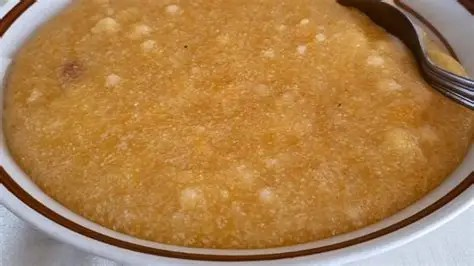
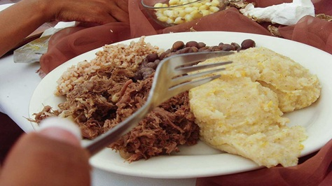

Food brings people together, However, the Bakwena believe that their tradition cuisine plays an important role in ceremonies and more.
Bogobe jwa lerotse is soft porridge made from sorghum and mixed with squash in setswana lerotse.
Seswaa is a traditional cuisine in the Bakwena tribe it is made from goat or cow meat. The meat boiled until it is soft then it is pounded.
It is served with Bogobe jwa lerotse and this meal is commonly served during ceremonies like weddings.